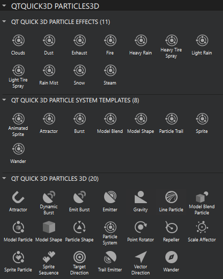
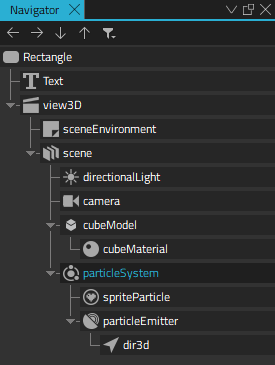
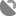
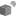
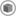
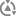
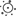
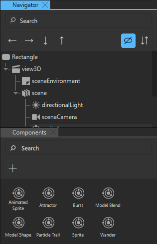

Particles
With a particle system you can use sprites, 3D models, or images to create effects that are hard to reproduce with conventional rendering techniques. This includes chaotic systems, natural phenomena, or processes caused by chemical reactions. For example, you can simulate fire, smoke, sparks, explosions, flowing water, fog, snow, stars, and galaxies.
The Qt Design Studio particle system contains the following main types of components:
Preset particle components, templates, and effects are available in Components > QtQuick3D Particles3D after you add the QtQuick3D.Particles3D module to your project, as instructed in Adding and Removing Modules.

Particle Components
When you add an instance of the Particle System component to a scene, Qt Design Studio automatically adds instances of the Sprite Particle, Emitter, and Vector Direction components for you.

The Sprite Particle is a visual 2D texture particle. To use 3D model particles, add instances of the Model Particle component to the particle system. It is important to define the amount of particles to use in Properties > Particle > Max amount, so that the optimal buffer sizes get allocated. You can also specify the color and opacity of the particles, as well as the speed at which they fade in and out.
The Emitter component emits the sprite or model particles. You can specify particle shape and the area where they are emitted. Use variation in particle size and rotation for more natural results. Further, define the life span and initial direction of speed of the emitted particles.
Usually, affectors are used to make particle movement more interesting. For example, you could add an instance of the Gravity component to simulate falling objects, an instance of the Wander component to simulate flying objects that follow wavy curves, or an instance of the Point Rotator to simulate windy weather.
The following table lists preset particle components.
| Icon | Name | Purpose |
|---|---|---|
| Attractor | Attracts particles towards a specific point. | |
|  | Dynamic Burst | Emits particles in dynamic bursts. Use dynamic burst for emitters that are moving. |
| Emit Burst | Emits particles in bursts. | |
| Emitter | Emits logical particles. | |
| Gravity | Accelerates particles to a vector of the specified magnitude in the specified direction. | |
| Line Particle | Creates line-shaped sprite particles. | |
|  | Model Blend Particle | Blends a particle effect with an instance of a Model component. |
|  | Model Particle | Creates a particle that uses an instance of a Model component. |
| Model Shape | Provides 3D shapes from a model to emitters and affectors. | |
|  | Particle Shape | Provides 3D shapes to emitters and affectors. |
| Particle System | Creates a particle system that includes particle, emitter, and affector components. | |
| Point Rotator | Rotates particles around a pivot point. | |
| Repeller | Repels particles from its location. | |
|  | Scale Affector | Scales particles based on the particles' lifetime and other parameters. |
| Sprite Particle | Creates particles that use a 2D sprite texture. | |
| Sprite Sequence | Provides image sequence features for Sprite Particle component instances. | |
| Target Direction | Specifies a direction towards the target position. | |
| Trail Emitter | Emits logical particles from other particles. | |
| Vector Direction | Specifies a direction towards the target direction. | |
| Wander | Applies random wave curves to particles. |
Particle Templates
A particle template is a preset of particle components that you can use to create specific particle effects in a convenient way.
The following table lists particle templates and their components.
| Template | Components |
|---|---|
| Animated Sprite | Particle System
|
| Attractor | Particle System
|
| Burst | Particle System
|
| Model Blend | Particle System
|
| Model Shape | Particle System
|
| Particle Trail | Particle System
|
| Sprite | Particle System
|
| Wander | Particle System
|
Particle Effects
A particle effect is a ready-made effect that you can use to create, for example, fire, rain, or mist in a convenient way.
The following particle effects are available:
- Clouds
- Dust
- Exhaust
- Fire
- Heavy Rain
- Heavy Tire Spray
- Light Rain
- Light Tire Spray
- Rain Mist
- Snow
- Steam
Adding a Particle System
The recommended way to add a particle system is to use one of the particle templates and then add or remove particle components according to your use case.
For example, to add a particle system that emits sprite particles:
- From Qt Quick 3D Particles System Templates in Components, drag Sprite to a scene component in Navigator. You can also drag it to the 3D view.

Performance Considerations
The particles are designed to be usable on a variety of hardware on desktops, as well as mobile and embedded devices. However, in addition to rendering the maximum amount of particle elements on the screen, extensibility to different use-cases, rendering quality, integration with the other UI elements, are also important.
Currently, the rendering runs on GPU, while the particle system logic runs on CPU. However, the stateless particle system enables you to move the system logic onto GPU if that seems beneficial. The initial measurements indicate that the system is quite well balanced between CPU and GPU. The stateless system also enables animating particles by using a timeline. The model particles use instanced rendering to boost the performance. Therefore, OpenGL ES 2.0 isn't sufficient to make rendering performant, and at least OpenGL ES 3.0, Vulkan, or some other modern backend is required.
To get a more concrete view on the actual performance, the video below shows a particles Testbed application running on four different Android devices. These devices and their chipsets and GPUs could be considered to be lower-end to mid-range, confirming that the particles can perform well also on affordable hardware.